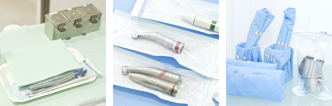
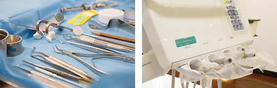

インプラントならアイデンタルクリニック トップページ > 感染予防に対する当クリニックの取り組み

当クリニックでは、National Center for Chronic Disease Prevention and Health Promotion,CDC（米国疾病管理予防センター、国立慢性病予防・健康増進センター口腔衛生部）監修の「歯科臨床における院内感染予防ガイドライン-2003年」に準拠した感染予防対策処置を常時に行っております。 |

1.着衣、手袋などはすべて使い捨て製品を使用しています。
2.全ての手術器具は個別に滅菌されております。
